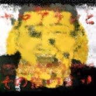

2 ヤマアラシ嗜好痁E��/ 空手�Eンボン�E�ケラ・大槻ケンヂ）！Ebr>西村知美＋巻上�E一�E��E笑問顁E/u>
販売允E�E東芝EMI。ケラリーノ�EサンドロヴィチE��のプロチE��ースによる、コントと楽曲を多数収めたオムニバス盤で、いわゆる『スネ�Eクマン・ショー』方式。比率としてはコント�EほぁE��めE��多い、EDとカセチE��の2種類が発売されたが、当方が�E手した�EはブックレチE��付きのCD版、Ea
href="http://d.hatena.ne.jp/panreco/" target="_blank">
Panpease
と共に向かった中野ブロードウェイ・フジヤエービック レコミンチE��て4000冁E��購入、Ebr>
『ヤマアラシとそ�E他�E変種』とぁE��アルバムタイトルは、エミリー・リストフィールド！Emily Listfield�E�なる女流作家の短編小説「ヤマアラシとそ�E他�E変種�E�原題Porcupines and Other
Travesties。注�E�Trac
estiesではなぁE��」に由来する、E0世紀アメリカの作家の短編を集めたアンソロジー「レイモンド�Eカーヴァーの子供たち」（文藝春秋よめE990年4月発売�E�所収、Ebr>
総合プロチE��ースはケラだが、E��楽プロチE��ースはムーンライダーズの鈴木慶一なので、大半�E楽曲の作曲及�E演奏を手がけてぁE��のは鈴木慶一。以下、�E演老E�E音楽参加老E��の他を曲目と共に挙げておく、Ebr>
出演老E/font>
大人計画�E�松尾すずき�E温水洋一�E� 劁E��健康�E�まつおあきら・手塚とおる・犬山犬子�E三宁E��城・みのすけ�E� 斎木しげる（シチE��ボ�Eイズ�E� Z-BEAM�E�前田真之輔�E阪田マサノブ�E� 爁E��問題（太田光�E田中裕二） ビシバシスチE���E�住田隁E�E西田康人�E� 松尾貴史�E�キチE��ュ�E�Ebr>
松尾スズキの名前が当時はひらがな表記だったり、温水洋一が大人計画出身だったりと知らなかった老E��しては驚きの連続だが、一番驚いた�EはブックレチE��に掲載された2人の写真。なんと髪の毛がふさ�Eさ、E5年経つと人はこうも変わる�Eか、E-BEAMは現GO・JOの阪田マサノブが在籍してぁE��お笑いコンビ。�E笑問題�Eニッポン放送を出入り禁止になった頁E�Eようだ。ビシバシスチE��は住田と西田の男2人時代。また松尾貴史は歌�EほぁE��も参加しており、Z-BEAM阪田と爁E��問題太田、松尾すずき、ビシバシスチE��はコント�E脚本も書ぁE��ぁE��、Ebr>
音楽参加老E/font>
あがた森魚 遠藤賢司 大槻ケンヂ 桐島かれん ケラ 小松亮太 高橋佐代子！EELDA�E� 知乁E��焼�E�たま�E� ちわきまめE�� 西村知美 THE
BEATNIKS�E�高橋幸宏�E鈴木慶一�E� パンタ 福富幸宏！EODOM�E� ブラボ�E小松 巻上�E一�E�ヒカシュー�E�Ebr>
どぁE��て再発されなぁE�Eか訝しく思うほどに豪華なメンバ�Eが揃ってぁE��。ケラの人徳だろうか。�E頭脳警察�Eパンタが一曲のみでベ�Eスを弾ぁE��ぁE��のも贁E��でよい。特筁E��べき�Eソドム時代の福富幸宏で、ドラムのプログラミングで一曲参加してぁE��、Ebr>
作詞�E脚本
乁E���E之 吉田戦車 天乁E��一
乁E���E之�E漫画家コンビ�E泉�E之�E牁E��れで、有頂天『土俵王子』�EジャケチE��を手がけたり、またモダンヒップ�Eメンバ�Eとしてバンド活動をしてぁE��時期もあったり。吉田戦車�Eコント�E脚本のほか、本アルバムのジャケチE��に笑う男の絵を提供してぁE��。正式なクレジチE��はなぁE��見ればすぐ判る。で、衝撃なのが今や電気ファミリーの一員�E�とぁE��より急先鋒�E�となった天乁E��一。吉田戦車とは同業で懁E��でもある�Eで、まあ可能性としてはなく�EなぁE�Eだが�E・・ケラと合同で脚本を一本書ぁE��ぁE��、Ebr>
�E�追記）それと、「ヤマアラシ嗜好痁E��を発展させたケラ�E�E��・シンセサイザーズのナンバ�E「神様とそ�E他�E変種」が、E007年3朁E8日リリースのアルバム、E5
Elephants』に収められてぁE��とぁE��惁E��を�E手。まだ現物は聴ぁE��ぁE��ぁE�Eで詳細は不�Eだが、�EめE��としたら後日取り上げるかも知れなぁE��取り上げなぁE��も知れなぁE��Ebr>
�E�E007年10朁E7日追記）どぁE��ら�E発が決定した模様！ERIDGE-111
税込3,150冁E��、E007年11朁E3日リリース、E0ペ�Eジに渡る豪華ブックレチE��のほか、なんとボ�EナストラチE��も収録予定だそうなので、もし購入してみて追加曲が空バカに関係�Eあるも�Eだったら、更に本稿を加筁E��る予定、Ebr>
関連ペ�EジↁEa href="http://www.cdjournal.com/main/news/news.php?nno=16856" target="_blank">
CDJournal.com - ニュース - ケラ版“スネ�Eク・マン・ショー E? V.A.『ヤマアラシとそ�E他�E変種』が再発に�E�E/font>
曲目
出演老E�E音楽参加老E/font>
作詞作曲編曲そ�E仁E/font>
1
メチE��チE��ション STEP 1
斎木しげめEbr>劁E��健康
脚本�E�ケラリーノ�EサンドロヴィチE��
演奏：鈴木慶一
2
ヤマアラシ嗜好痁E/font>
空手�Eンボン�E�ケラ・大槻ケンヂ
VOCAL�E�Ebr>�E�西村知羁EVOCAL)
�E�巻上�E一(VOCAL)
�E��E笑問顁E太田光�E田中裕二 漫扁E
作詞�E作曲�E�ケラ
編曲�E�鈴木慶一�E�E��ラ
演奏：鈴木慶一
3
たもつ�E�E�E�E/font>
松尾貴史�E�キチE��ュ�E�Ebr>ケラ
鴨下琴海 杉浦明彦
常松めぐみ 三宁E��丁E/font>
脚本�E�吉田戦軁E/font>
4
THE GREATEST SONG OF ALL
松尾貴史(VOCAL)�E�Ebr>THE
BEATNIKS�E�高橋幸宏�E
鈴木慶一 CHORUS�E�Ebr>withちわきまめE��(CHORUS)
作詞：乁E���E乁Ebr>作曲・編曲・演奏：高橋幸宏�E鈴木慶一
5
たもつ�E�E�E�E/font>
松尾貴史�E�キチE��ュ�E�Ebr>ケラ
脚本�E�吉田戦軁E/font>
6
ナレーション
斎木しげめE/font>
7
辻弁�Eからの中綁Ebr>�E�注�E�「辻」�EしんにめE��は2点しんにめE���E�E/font>
ビシバシスチE���E�住田隁E�E西田康人�E�E/font>
脚本�E�ビシバシスチE��
8
ナレーション
斎木しげめE/font>
9
崩れた二人
Z-BEAM�E�前田真之輔�E阪田マサノブ�E�E/font>
脚本�E�阪田マサノブ
演奏：鈴木慶一
10
夕飁E/font>
劁E��健康�E�まつおあきら・手塚とおる・
犬山犬子�E三宁E��城・みのすけ�E�Ebr>ビシバシスチE��
脚本�E�犬山犬孁E/font>
11
ブルーライト�Eヨコハ�E
ビシバシスチE��
(LEAD VOCAL�E�EHORUS)
作詞：橋本淳
作曲�E�筒美京平
編曲�E�ビシバシスチE��
12
西の果てにある なんにも起こらなぁE��と
東の果てにある なんにも起こらなぁE��の
なんにも起こらなぁE��悲しい恋人達�Eお話
ケラ(VOCAL)
高橋佐代孁EVOCAL)
知乁E��焼(CHORUS�E�EARRATION)
作詞：ケラ
作曲・演奏：鈴木慶一
13
電話
大人計画�E�松尾すずき�E温水洋一�E�E/font>
脚本�E�松尾すずぁEbr>演奏：鈴木慶一
14
葬弁E/font>
斎木しげめEbr>劁E��健康
ケラ
脚本�E�ケラリーノ�EサンドロヴィチE��
15
昼のラジオ
爁E��問顁Ebr>ビシバシスチE��
脚本�E�太田允E/font>
16
岡本太郎�E眼�E��EーシャルめE��老E�EぁEbr>夢の音�E�E/font>
遠藤賢司(VOCAL�E�EUITAR)
PANTA(BASS)
ブラボ�E小松(GUITAR)
福富幸宁EDRUMS PROGRAMMING)
作詞�E作曲�E�遠藤賢司
編曲�E�遠藤賢司・ブラボ�E小松・鈴木慶一
17
予告編
劁E��健康
ケラ
P・フリークス・オールスターズ
ビシバシスチE��
脚本�E�ケラリーノ�EサンドロヴィチE��
天乁E��一
演奏：鈴木慶一
18
Indio Del Tango
あがた森魁EVOCAL)
桐島かれめEVOCAL)
小松亮太(BANDNEONS)
鈴木慶一(OTHER
INSTRUMENTS)
作詞：あがた森魁Ebr>作曲�E�鈴木慶一
19
ヤマキ
松尾貴史
ケラ
脚本�E�吉田戦軁E/font>
20
ヤマアラシ嗜好痁E�Eリプライズ
鈴木慶一
斎木しげめENARRATION)
作曲�E�ケラ
演奏：鈴木慶一
21
借��と水滴
ビシバシスチE��
犬山犬孁E/font>
脚本�E�ビシバシスチE��
演奏：鈴木慶一
空手チョチE�EをもぁE��度。TOPへ